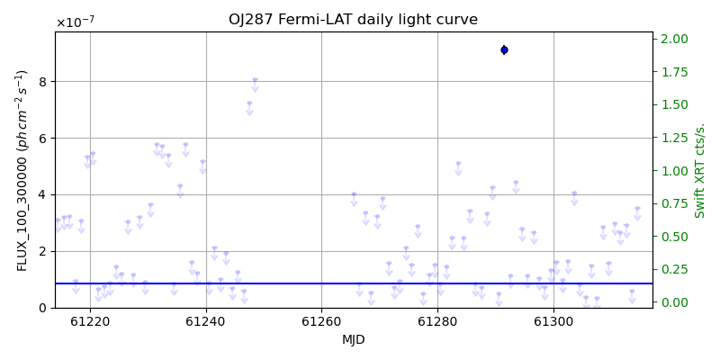
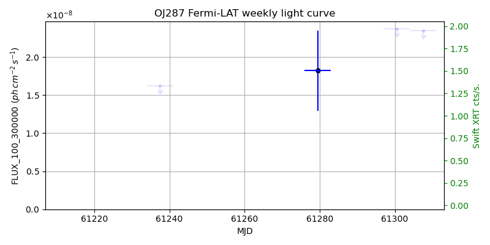
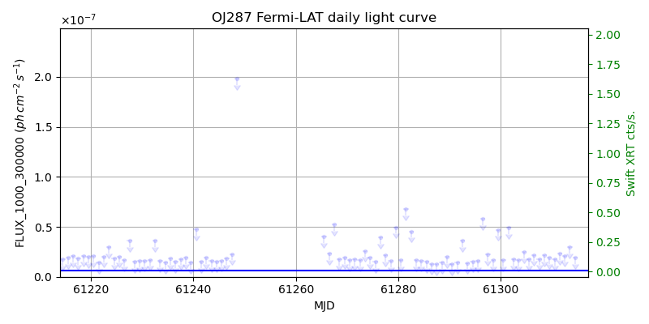
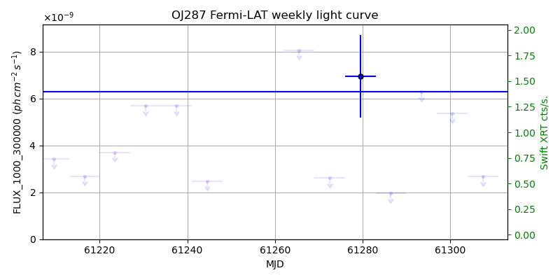

LAT Lightcurve site: https://fermi.gsfc.nasa.gov/ssc/data/access/lat/msl_lc/source/OJ_287
Swift site: https://www.swift.psu.edu/monitoring/source.php?source=OJ287
NED: Query
Time of last update of this page: UT: 2026-10-02 15:20 (MJD: 61315.639)
| Property | Value |
|---|---|
| R.A. | 8:54:48.96 |
| Dec. | 20:06:32.4 |
| z | 0.306 |
| 3FGL SpectrumType | LogParabola |
| 3FGL PL Index | |
| 3FGL Flux_100_300000 | 8.41e-08 1 / (s cm2) |
| 3FGL Flux_1000_300000 | 6.30e-09 1 / (s cm2) |
| 3FGL Flux >200 GeV | 5.46e-12 1 / (s cm2) |
| 3FGL Extrap. Crab >200 GeV | 0.02 |
| 3FGL Flux After EBL Absorption >200GeV | 1.90e-12 1 / (s cm2) |
| 3FGL EBL Crab Fraction >200GeV | 0.01 |

| MJD | dMJD | Flux | dFlux | Frac3FGL | FracCrab>200GeV | EBLFracCrab>200GeV |
|---|---|---|---|---|---|---|
| 61310.50 | 0.50 | 2.99e-07 | 0.00e+00 | 0.00 | 0.00 | 0.00 |
| 61311.50 | 0.50 | 2.65e-07 | 0.00e+00 | 0.00 | 0.00 | 0.00 |
| 61312.50 | 0.50 | 2.92e-07 | 0.00e+00 | 0.00 | 0.00 | 0.00 |
| 61313.50 | 0.50 | 5.82e-08 | 0.00e+00 | 0.00 | 0.00 | 0.00 |
| 61314.50 | 0.50 | 3.52e-07 | 0.00e+00 | 0.00 | 0.00 | 0.00 |

| MJD | dMJD | Flux | dFlux | Frac3FGL | FracCrab>200GeV | EBLFracCrab>200GeV |
|---|---|---|---|---|---|---|
| 61279.50 | 3.50 | 1.82e-08 | 5.25e-09 | 0.22 | 0.01 | 0.00 |
| 61286.50 | 3.50 | 1.32e-07 | 0.00e+00 | 0.00 | 0.00 | 0.00 |
| 61293.50 | 3.50 | 2.02e-07 | 0.00e+00 | 0.00 | 0.00 | 0.00 |
| 61300.50 | 3.50 | 2.37e-08 | 0.00e+00 | 0.00 | 0.00 | 0.00 |
| 61307.50 | 3.50 | 2.35e-08 | 0.00e+00 | 0.00 | 0.00 | 0.00 |

| MJD | dMJD | Flux | dFlux | Frac3FGL | FracCrab>200GeV | EBLFracCrab>200GeV |
|---|---|---|---|---|---|---|
| 61310.50 | 0.50 | 1.75e-08 | 0.00e+00 | 0.00 | 0.00 | 0.00 |
| 61311.50 | 0.50 | 2.31e-08 | 0.00e+00 | 0.00 | 0.00 | 0.00 |
| 61312.50 | 0.50 | 2.12e-08 | 0.00e+00 | 0.00 | 0.00 | 0.00 |
| 61313.50 | 0.50 | 2.96e-08 | 0.00e+00 | 0.00 | 0.00 | 0.00 |
| 61314.50 | 0.50 | 1.89e-08 | 0.00e+00 | 0.00 | 0.00 | 0.00 |

| MJD | dMJD | Flux | dFlux | Frac3FGL | FracCrab>200GeV | EBLFracCrab>200GeV |
|---|---|---|---|---|---|---|
| 61279.50 | 3.50 | 6.96e-09 | 1.76e-09 | 1.10 | 0.03 | 0.01 |
| 61286.50 | 3.50 | 1.96e-09 | 0.00e+00 | 0.00 | 0.00 | 0.00 |
| 61293.50 | 3.50 | 6.30e-09 | 0.00e+00 | 0.00 | 0.00 | 0.00 |
| 61300.50 | 3.50 | 5.37e-09 | 0.00e+00 | 0.00 | 0.00 | 0.00 |
| 61307.50 | 3.50 | 2.67e-09 | 0.00e+00 | 0.00 | 0.00 | 0.00 |
--------------------------------------------------------- Using user-supplied coords: 8:54:48.96 20:06:32.4 2000 --------------------------------------------------------- FLWO UT night of: 2026-10-03 Local Sid. @ Midnight: 00:24 Sunset (-15.0) (local, UT): 19:14 02:14 Sunrise (-15.0) (local, UT): 05:12 12:12 Moonrise (local, UT): 22:48 05:48 Moonset (local, UT): Moon phase: 0.53 --------------------------------------------------------- AzTime LSID UT Obj_el Obj_az Mn_el Mn_az Sep. --------------------------------------------------------- 19:14 19:37 02:14 -35.0 337.2 -28.5 20.1 36.8 19:44 20:07 02:44 -37.0 345.5 -26.2 26.7 36.4 20:14 20:37 03:14 -38.1 354.3 -23.2 32.8 36.0 20:44 21:07 03:44 -38.2 3.3 -19.6 38.5 35.6 21:14 21:37 04:14 -37.4 12.2 -15.7 43.6 35.2 21:44 22:07 04:44 -35.6 20.7 -11.3 48.4 34.9 22:14 22:37 05:14 -32.9 28.6 -6.5 52.7 34.5 22:44 23:07 05:44 -29.5 35.9 -0.8 56.7 34.2 23:14 23:37 06:14 -25.4 42.4 3.8 60.4 33.9 23:44 00:07 06:44 -20.9 48.3 9.1 63.9 33.6 00:14 00:38 07:14 -15.9 53.6 14.6 67.1 33.3 00:44 01:08 07:44 -10.6 58.4 20.3 70.2 33.0 01:14 01:38 08:14 -4.4 62.8 26.1 73.1 32.7 01:44 02:08 08:44 1.1 66.8 32.1 76.0 32.5 02:14 02:38 09:14 6.8 70.6 38.1 78.8 32.2 02:44 03:08 09:44 12.9 74.2 44.2 81.7 32.0 03:14 03:38 10:14 19.1 77.7 50.3 84.8 31.8 03:44 04:08 10:44 25.4 81.2 56.5 88.1 31.5 04:14 04:38 11:14 31.7 84.7 62.7 91.9 31.3 04:44 05:08 11:44 38.1 88.4 68.9 96.9 31.1 05:12 05:37 12:12 44.2 92.2 74.7 103.8 31.0 --------------------------------------------------------- Dark hours >55 deg.: 0.00